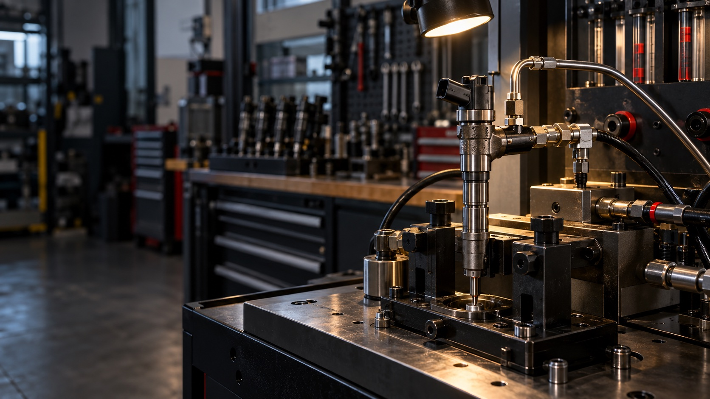
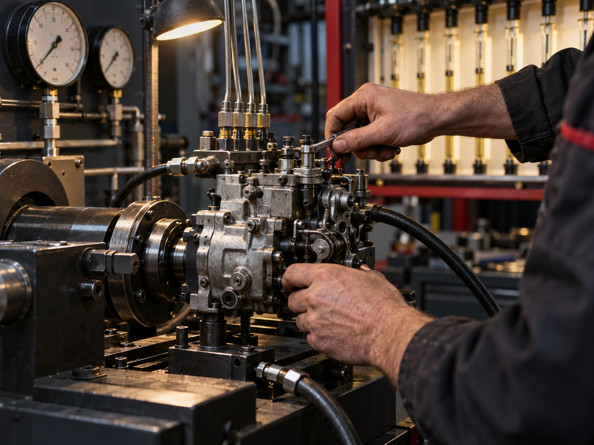
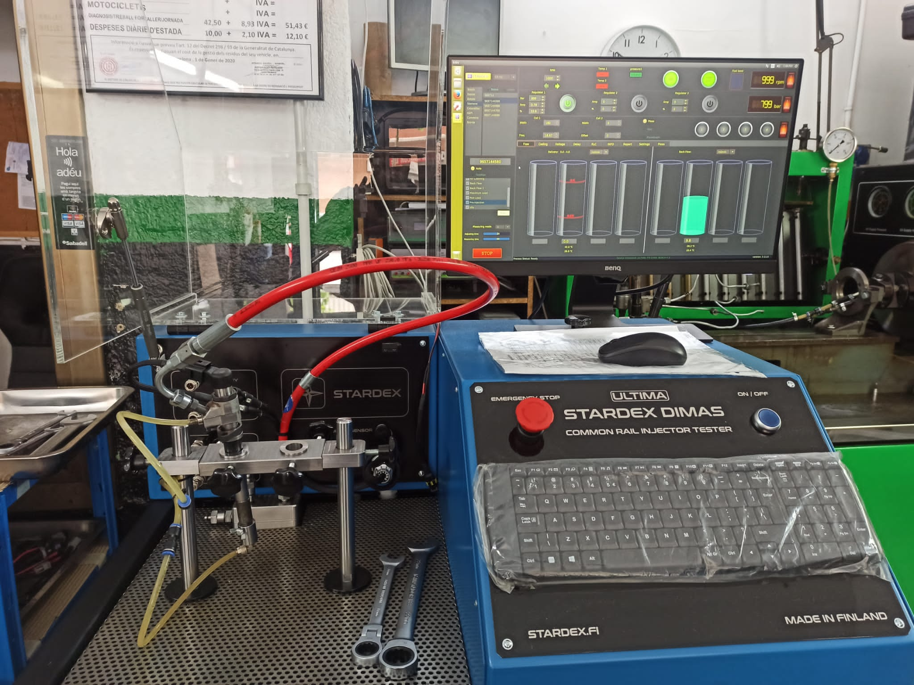
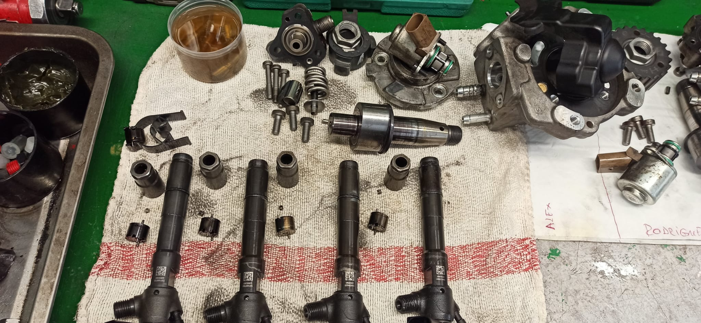

Bombas e
inyectores.
Reparación de bombas inyectoras e inyectores diésel en Viladecans, Barcelona, con diagnosis en bancos propios.
Solicitar diagnósticoImagen ilustrativa de equipamiento de inyección diésel
Diagnosis en
banco propio.
En nuestro taller de Viladecans, Barcelona, comprobamos bombas inyectoras e inyectores antes de presupuestar. La prueba define la reparación que necesita cada pieza.

Bombas inyectoras
Comprobamos la bomba en banco para valorar su estado y definir la reparación antes de preparar el presupuesto.
- Equipo
- Bancos de prueba propios
- Proceso
- Prueba antes de reparar
La reparación
se demuestra en banco.
No damos una pieza por terminada hasta comprobar su respuesta. La diagnosis y las mediciones guían cada intervención.


Cada bomba y cada inyector sigue un proceso claro antes de volver al cliente.
- 01
Registro y diagnosis
Identificamos la pieza y comprobamos su estado inicial en el equipo adecuado.
- 02
Presupuesto
Te explicamos el resultado y la reparación propuesta antes de intervenir.
- 03
Reparación
Actuamos sobre el componente según lo detectado en la diagnosis.
- 04
Verificación final
Volvemos a probar la pieza en banco antes de preparar su envío.
Atendemos
toda España.
Trabajamos con clientes de toda España. Recibimos la pieza en el taller, te informamos antes de reparar y la enviamos de vuelta al terminar.
- 01
Recibimos
Nos haces llegar la bomba o los inyectores desde cualquier punto de España.
- 02
Diagnosticamos
Comprobamos la pieza en nuestros bancos de prueba.
- 03
Presupuestamos
Te explicamos la reparación y el coste antes de empezar.
- 04
Reparamos
Con tu aprobación, intervenimos y verificamos la pieza.
- 05
Enviamos
Preparamos la pieza reparada para que vuelva contigo.